전자기기기능장 (2012-07-22 기출문제)
1과목: 임의구분
1. f(t)=2cost를 라플라스 변환하면?
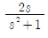
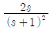
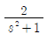
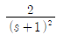
(정답률: 70%)

2. 순서 논리회로의 구성으로 가장 적합한 것은?
- 감산 회로와 논리 회로
- 가산 회로와 논리 회로
- 조합 논리회로와 논리 소자
- 조합 논리회로와 기억 소자
(정답률: 78%)
3. 10진수 0.6875를 2진수로 변환한 것은?
- (0.1101)2
- (0.1011)2
- (0.1110)2
- (0.1111)2
(정답률: 76%)
4. 유전체손의 응용에 해당되지 않는 것은?
- 목재의 건조
- 비닐시트의 접착
- 섬유류의 건조
- 용해로의 가열 장치
(정답률: 91%)
5. CD 플레이어의 3가지 기본적인 부품(장치)에 속하지 않는 것은?
- 디스크구동 모터
- 레이저 픽업장치
- 트래킹 메카니즘
- 스마트미디어 카드
(정답률: 94%)
6. PLL(Phase Locked Loop)의 구성요소가 아닌 것은?
- VCO
- 위상 검출기
- 저역통과 필터
- 주파수 변별기
(정답률: 86%)
7. n채널 JFET가 IDSS = 9[mA], V(ofGS(off) = -8[V]이다.VGS = -4[V]일 때의 드레인 전류는?
- 1.27[mA]
- 2.25[mA]
- 3.38[mA]
- 4.59[mA]
(정답률: 74%)
8. 캐비테이션 효과를 이용하는 것은?
- 수심 측량
- 어군 탐지
- 초음파 탐상
- 초음파 세척
(정답률: 91%)
9. 제어계의 출력 신호와 입력 신호와의 비는?
- 미분함수
- 전달함수
- 제어함수
- 라플라스함수
(정답률: 93%)
10. 한 개의 값이 30[Ω]인 저항 3개가 Δ결선으로 되어 있을 때 Y결선으로 환산하면 1상의 저항값은?
- 10[Ω]
- 10√3[Ω]
- 15[Ω]
- 15√3[Ω]
(정답률: 83%)
11. 입력신호에 대한 출력전압이 얼마나 빨리 응답하는가를 나타내는 것으로 연산증폭기의 성능을 평가하는 척도가 되는 것은?
- 슬루율
- 오버슈트
- 응답시간
- 공통성분제거비
(정답률: 81%)
12. LED의 최대 정격 순방향 전류(IF)가 20[mA]이고, 순방향 전압(VF)이 2.1[V]이다. 이 LED에 공 급 전압이 5[V]일 때 전류제한 저항값은?
- 42[Ω]
- 80[Ω]
- 120[Ω]
- 145[Ω]
(정답률: 57%)
13. 전압이득이 20[dB]인 증폭기와 전압이득이 26[dB]인 증폭기를 직렬로 연결했을 때 종합 전압증폭도는? (단, 100.3 =1.995이다.)
- 10
- 20
- 100
- 200
(정답률: 46%)
14. 능률이 높고, 지향성이 강하나 저음특성이 나빠 중음 및 고음용, 메가폰용으로 주로 사용되는 스피커는?
- 콘덴서 스피커
- 콘형 다이내믹 스피커
- 돔형 다이내믹 스피커
- 혼형 다이내믹 스피커
(정답률: 86%)
15. R-L 직렬 회로에서 L=5[mH], R=10[Ω]일 때 회로의 시정수는?
- 0.002[s]
- 0.0002[s]
- 5×10-3[s]
- 5×10-4[s]
(정답률: 55%)
16. 다음 회로에서 교류전압 220[V]를 인가하였을 때 흐르는 전류 I는?
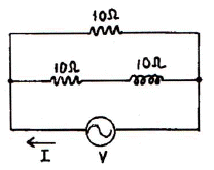
- 16.5-j5.5[A]
- 16.5+j5.5[A]
- 33-j11[A]
- 33+j11[A]
(정답률: 54%)
17. 듀티사이클이 0.1이고 주기가 20[μs]인 펄스의 폭은?
- 1[μs]
- 2[μs]
- 0.1[μs]
- 0.2[μs]
(정답률: 91%)
18. 16진 비동기 카운터를 만들려면 JK 플립플롭이 최소 몇 개가 필요한가?
- 2
- 3
- 4
- 6
(정답률: 89%)
19. 정류회로의 직류 출력전압이 100[V]이고 리플률이 0.2[%]일 때 리플전압의 최대값은?
- 0.02[V]
- 0.28[V]
- 2.0[V]
- 2.8[V]
(정답률: 43%)
20. 플라즈마 디스플레이(PDP) 특징에 대한 설명으로 틀린 것은?
- 자기발광으로 밝고 시야각이 우수하다.
- 경량 박형화 대화면 표시가 가능하다.
- 저전압구동이 가능하고 소비전력이 적다.
- 화면이 완전평면이고 일그러짐이 거의 없다.
(정답률: 97%)
2과목: 임의구분
21. 중앙처리장치 내에서 산술적인 연산과 논리적인 연산을 행하는 장치는?
- ALU
- BUS
- 레지스터
- 제어장치
(정답률: 95%)
22. 다음 중 OSI-7 계층에 해당하지 않는 것은?
- 인터넷 계층
- 물리 계층
- 응용 계층
- 전송 계층
(정답률: 96%)
23. 저항이 80[Ω], 인덕턴스가 265.25[mH], 커패시턴스가 66.31[μF]인 R-L-C 직렬회로에 v=220√2sin377t[V]의 전압을 가할 때 복소임피던스는?
- 80+j30[Ω]
- 80+j40[Ω]
- 80+j60[Ω]
- 80+j80[Ω]
(정답률: 78%)
24. 두 코일을 직렬로 접속했을 때 합성 인덕턴스가 20[mH]이고, 극성을 반대로 하여 접속했을 때 합성 인덕턴스가 12[mH]이면 두 코일의 상호인덕턴스는?
- 1[mH]
- 2[mH]
- 4[mH]
- 8[mH]
(정답률: 42%)
25. 전류증폭률 α가 0.99인 트랜지스터의 α차단주파수가 200[MHz]일 때 이 트랜지스터의 β차단주파수는?
- 0.1[MHz]
- 2[MHz]
- 16[MHz]
- 99[MHz]
(정답률: 50%)
26. CAD에서 PCB를 제작하기 위해 DRC 이후, 제조용 데이터를 출력하기 위한 것은?
- Netlist
- Partlist
- Copper Pour
- Gerber 파일
(정답률: 92%)
27. 8421 코드에서 7을 올바르게 나타낸 것은? (단, A는 LSB이며, D는 MSB이다.)
- A=0, B=1, C=1, D=1
- A=1, B=1, C=0, D=0
- A=0, B=0, C=1, D=1
- A=1, B=1, C=1, D=0
(정답률: 86%)
28. 컴퓨터와 주변장치 사이에 데이터 전송을 수행할 때 입출력의 준비나 완료를 나타내는 신호를 주고받는 기능으로 비동기식 입출력 시스템에 널리 쓰이는 것은?
- Polling
- interrupt
- Paging
- handshaking
(정답률: 86%)
29. 목표값이 시간에 따라 변화하고 출력이 이것을 추종할 경우 자동제어는?
- 정치제어
- 공정제어
- 추치제어
- 자동제어
(정답률: 75%)
30. 음압이 0.002[μ bar]일 때 음압 레벨(SPL)은?
- 0[dB]
- 20[dB]
- 40[dB]
- 60[dB]
(정답률: 49%)
31. HDTV에 대한 설명으로 틀린 것은?
- 화면비는 16:9 이다.
- 음성다중은 5.1 채널이다.
- 변조방식은 VSB 이다.
- 다양한 부가서비스를 제공할 수 있다.
(정답률: 91%)
32. 4단자 정수 A, B, C, D 중에서 어드미턴스의 차원을 가진 정수는?
- A
- B
- C
- D
(정답률: 73%)
33. 2개의 입력 A, B가 서로 다른 경우에만 1의 출력을 갖는 게이트는?
- EX-NOR
- NAND
- NOR
- EX-OR
(정답률: 94%)
34. 메모리 번지를 지정하기 위한 주소를 보관하는 레지스터는?
- 스택포인터
- 명령 레지스터
- 인덱스 레지스터
- 메모리 주소 레지스터
(정답률: 67%)
35. 수정발진기의 주파수 변동요인으로 영향이 가장 적은 것은?
- 부하의 변동
- 전원전압의 변동
- 주위 온도의 변화
- 트랜지스터의 경년 변화
(정답률: 67%)
36. -80[dB]의 감도를 가진 마이크로폰에 1[μ bar]의 음압을 가했을 때 출력전압은?
- 0.01[mV]
- 0.1[mV]
- 1[mV]
- 10[mV]
(정답률: 43%)
37. 역률이 70[%]인 부하에 전압 100[V]를 인가했을 때 5[A]의 전류가 흘렀다면 이 부하의 피상전력은?
- 100[W]
- 200[W]
- 350[W]
- 500[W]
(정답률: 69%)
38. 레이더에 마이크로파가 사용되는 이유로 가장 적합한 것은?
- 변조특성이 좋기 때문에
- 페이딩이 적기 때문에
- 지향성이 강하기 때문에
- 송신기 제작이 용이하기 때문에
(정답률: 88%)
39. 녹음기에서 테이프를 캡스턴에 압착하여 테이프가 정속으로 주행하도록 하는 것은?
- 구동 모터
- 핀치롤러
- 데이프 패드
- 테이프 가이드
(정답률: 69%)
40. 프로토콜의 기본 구성 요소에 속하지 않는 것은?
- 구문
- 의미
- 프레임
- 타이밍
(정답률: 88%)
3과목: 임의구분
41. 포토 커플러에 대한 설명으로 가장 적합한 것은?
- 포토다이오드에 증폭기능을 더한 소자
- PN 방향으로 동작할 때 특정한 파장의 빛을 방출하는 소자
- 단자저항이 입사광의 세기에 따라 선형적으로 변화하는 2단자 반도체 소자
- 발광소자와 수광소자를 광학적으로 결합하여 하나의 패키지에 내장한 광복합 소자
(정답률: 62%)
42. 중앙처리장치의 부하를 경감하고 전송속도를 개선하기 위해 입출력장치가 중앙처리장치를 거치 않고 직접 기억장치를 Access 하는 것은?
- DMA
- Polling
- Interleaving
- Cycle stealing
(정답률: 96%)
43. 전가산기에 대한 설명으로 옳은 것은?
- 입력 2개, 출력 2개로 구성된다.
- 입력 2개, 출력 3개로 구성된다.
- 입력 3개, 출력 2개로 구성된다.
- 입력 3개, 출력 3개로 구성된다.
(정답률: 80%)
44. 다음 논리회로를 간단히 하면?
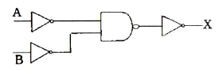
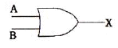
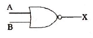
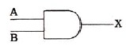
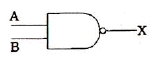
(정답률: 75%)
45. 메모에 저장된 내용을 지울 수 없으며 대량생산에 적합한 것은?
- EPROM
- EAROM
- EEPROM
- Mask ROM
(정답률: 91%)
46. 무궤환시 전압증폭도가 100, 왜율이 10[%]인 저주파 증폭기에 궤환율 β=0.09의 부궤환을 걸었을 때 왜율은?
- 0.1[%]
- 0.5[%]
- 1[%]
- 5[%]
(정답률: 52%)
47. 다음 회로에서 궤환율 β는?
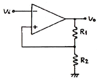
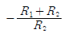
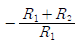
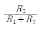
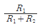
(정답률: 69%)
48. 채터링(Chattering) 방지 회로로 쓰이는 것은?
- 래치 회로
- 시미트 트리거 회로
- 매트릭스 회로
- 멀티플렉서 회로
(정답률: 69%)
49. 베이스 접지 증폭기에 대한 설명으로 틀린 것은?
- 전류이득이 1 보다 작다.
- 입력에 대한 출력은 영위상이다.
- 고주파를 다루는 응용분야에 주로 사용된다.
- 출력저항은 이미터 접지 증폭기보다. 크다.
(정답률: 78%)
50. 주파수가 54[MHz]인 반송파를 3[kHz]의 신호파로 FM 변조했을 때 최대주파수편이가 ±15[kHz]이면 점유주파수 대역폭은?
- 6[kHz]
- 30[kHz]
- 36[kHz]
- 72[kHz]
(정답률: 75%)
51. 명령어의 오퍼랜드에 유효번지(실제 데이터가 있는 번지)가 저장되어 있는 주소를 갖고 있는 방식은?
- 상대주소 지정방식
- 고유주소 지정방식
- 레지스터 지정방식
- 간접주소 지정방식
(정답률: 79%)
52. 음질이 좋고 잡음이 적으며 초소형으로 제작이 가능하나 직류전원이 필요한 것은?
- 리본형 마이크로폰
- 가동코일형 마이크로폰
- 무선 마이크로폰
- 콘덴서 마이크로폰
(정답률: 91%)
53. 디지털 데이터를 디지털 신호로 변환하는 전송부호(부호화)의 종류에 속하지 않는 것은?
- NRZ
- CMI
- ADM
- 맨체스터
(정답률: 80%)
54. 이중 적분형 A/D 변환기에 대한 설명으로 틀린 것은?
- 디지털 전압계를 비롯하여 정밀한 계측에 널리 사용된다.
- 적분에 의해 잡음에 의한 변환기 출력의 불규칙한 흔들림을 제거한다.
- 고속 처리가 가능하여 플래시형 A/D 변환기라 부르기도 한다.
- 장기적인 회로 부품이나 클럭의 변동에 따른 영향을 최소화할 수 있다.
(정답률: 64%)
55. 축의 완성지름, 철사의 인장강도, 아스피린 순도와 같은 데이터를 관리하는 가장 대표적인 관리도는?
- c 관리도
- nP 관리도
- u 관리도
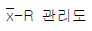
(정답률: 60%)
56. 로트의 크기가 시료의 크기에 비해 10배 이상 클 때, 시료의 크기와 합격판정개수를 일정하게 하고 로트의 크기를 증가시킬 경우 검사특성곡선의 모양 변화에 대한 설명으로 가장 적절한 것은?
- 무한대로 커진다.
- 별로 영향을 미치지 않는다.
- 샘플링 검사의 판별 능력이 매우 좋아진다.
- 검사특성곡선의 기울기 경사가 급해진다.
(정답률: 68%)
57. 작업시간 측정방법 중 직접측정법은?
- PTS법
- 경험견적법
- 표준자료법
- 스톱워치법
(정답률: 78%)
58. 준비작업시간 100분, 개당 정미작업시간 15분, 로트 크기 20일 때 1개당 소요작업시간은 얼마인가? (단, 여유시간은 없다고 가정한다.)
- 15분
- 20분
- 35분
- 45분
(정답률: 54%)
59. 소비자가 요구하는 품질로서 설계와 판매정책에 반영되는 품질을 의미하는 것은?
- 시장품질
- 설계품질
- 제조품질
- 규격품질
(정답률: 84%)
60. 다음 중 샘플링 검사보다 전수검사를 실시하는 것이 유리한 경우는?
- 검사항목이 많은 경우
- 파괴검사를 해야하는 경우
- 품질특성치가 치명적인 결점을 포함하는 경우
- 다수 다량의 것으로 어느 정도 부적합품이 섞여도 괜찮을 경우
(정답률: 79%)